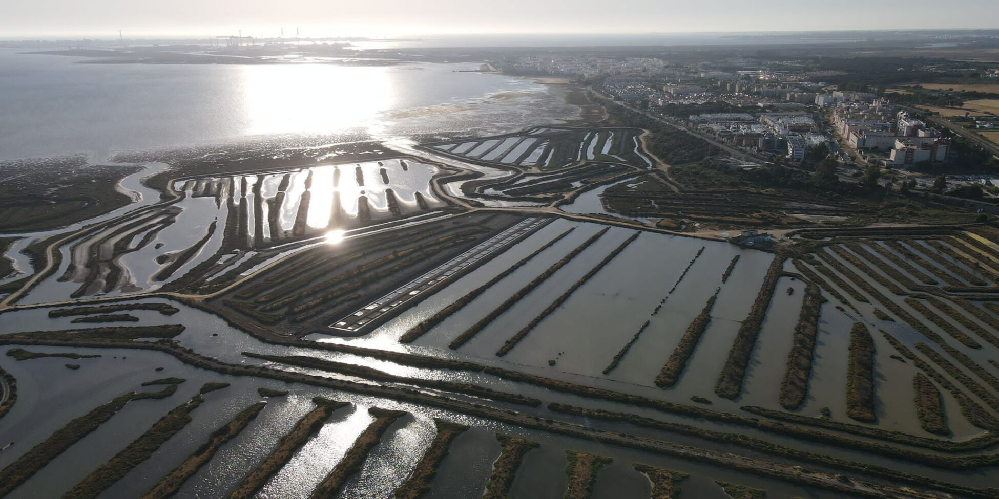
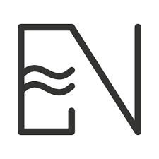
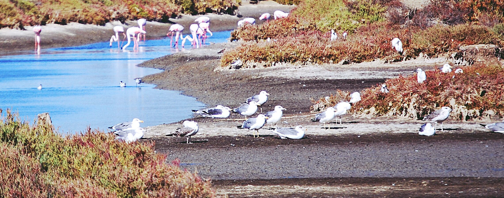

En pleno corazón del Parque Natural Bahía de Cádiz, existe un lugar donde el mar, la marisma y el tiempo trabajan juntos. Ese lugar es Estero Natural.
Somos un referente en turismo acuícola sostenible y la única empresa certificada en acuiturismo (001 – CA – A). Unimos tradición, innovación y respeto por el entorno para ofrecer experiencias auténticas que conectan con la naturaleza, la cultura y la gastronomía local.
Nuestro proyecto nace del amor por los esteros y sus productos, apostando por un modelo responsable que genera valor ambiental, social y económico.
Lo que ofrecemos:

ESTERO NATURAL: SÁBADOS DE ESTEROS
SALINA NUESTRA SEÑORA DE BELÉN (SITIO DE ENCUENTRO EN EL PUNTO LIMPIO DE CASINES A LAS 11:30 EXPERIENCIA COMPLETA O 13:30 SI ES MODALIDAD SIN VISITA). ESTERO NATURAL. SALINA NUESTRA SEÑORA DE BELÉN (Puerto Real, Cádiz) – Ver mapa
Varias fechas
Organizado por ESTERO NATURAL
En la Salina de Belén, estamos comprometidos con el futuro. Este proyecto, cofinanciado por la Unión Europea y la Junta de Andalucía, impulsa el desarrollo acuícola y turístico sostenible, contribuyendo a una economía azul y fortaleciendo nuestra comunidad pesquera local.
Ver ayudas